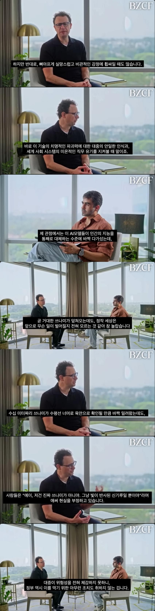

수학자 테렌스 타오가 리만 가설은 2050년 쯤에나 풀릴 것으로 "올해 10월"에 인터뷰했는데, 앤트로픽 AI가 35일 뒤에 풀어버림.
이제 정말 가속화되는 듯

수학자 테렌스 타오가 리만 가설은 2050년 쯤에나 풀릴 것으로 "올해 10월"에 인터뷰했는데, 앤트로픽 AI가 35일 뒤에 풀어버림.
이제 정말 가속화되는 듯
항상 재난영화보면 관련된 학자가 그걸 미리 감지해서 깨닫고
정부,군 관계자들에게 위험을 예고하지만 무시당하는...
그것도 심지어 좋은 AI는 지네들만 쓰고 요란법석임. 우린 시키는 것도 제대로 못하는 초딩 AI수준인데
이게 다리오가 말하는 우매한놈의 표상임
100명중에 돈쓰는 애가 5명이더라도 이미 ai수준이 인류에 위협될 수준으로 올라와서 나머지 95는 ai를 제대로 다루지도 못하는데 ai한테 개쳐맞게 생긴거라고 경고하는거잖아
좋은 일만 있는게 아니라 관심없는 놈들이 더 심하게 당할수있다고
AI에 토큰 쏟아부으면서 그 기능을 체감할 수 있는 사람은 0.01%도 안 되는데 그걸 대중들이 알아주길 원하냐 ㅋㅋ 나머지 99%는 챗GPT에 그림이나 그려달라고 하면서 산다
이 새끼들도 투자 더 받으려고 입터는거 같아
그 쓰나미도 니들이 만드는거고
통제 가능 하게끔 잘만들어봐 임마
돈더 받으려고 공포조장 투자유도하지말고
기후위기는 더 위험한데도 대부분의 사람들은 경각심 없는거 모르나ㅋㅋㅋ
러다이트 운동 하라고 부추기는건가 -ㅇ-??
이새기들 저렇게 여유부릴때가 아닐건데 돈없어서 난리 아닌감..... 아니면 저걸로 유입시켜서 유동성 확보하려고 하나
아니 일반인의 두다리론 쓰나미 목격한순간 아무리 달려봐야 이미 못벗어나는거야 차나 다른 뭐 있는 애들이나 대응이란게 가능하지
ai도 돈없으면 안돌아가. ai가 석유 시추해서 발전기돌려서 자기들 전기 수급하는 순환구조 만들어지기전에는 인간통제 밑에있는 것임
진짜 웃긴게 진짜 AI를 실제로 쓰는 인구도 전세계 100명이라 치면 30명이고 쓰는, 돈 몇 십 만원 쓰면서 AI쓰는 인구도 전세계 100명이라고 치면 겨우 5명도 안되는 상황인데 뭘 일반인들은 모른다고 어쩌구저쩌구 하는지 모르겠네. 기술을 만들고 보급하는 쪽에서 대중에게 먼저 직관적인 효용이나 위협을 납득시키지 못한 채, "왜 쓰나미가 오는데도 대비하지 않고 현실을 부정하느냐"며 일반 대중의 인식 부족 탓으로 돌리는 화법보면 연구소만 쳐박은 새끼의 전형적인 모습이 딱 보임.